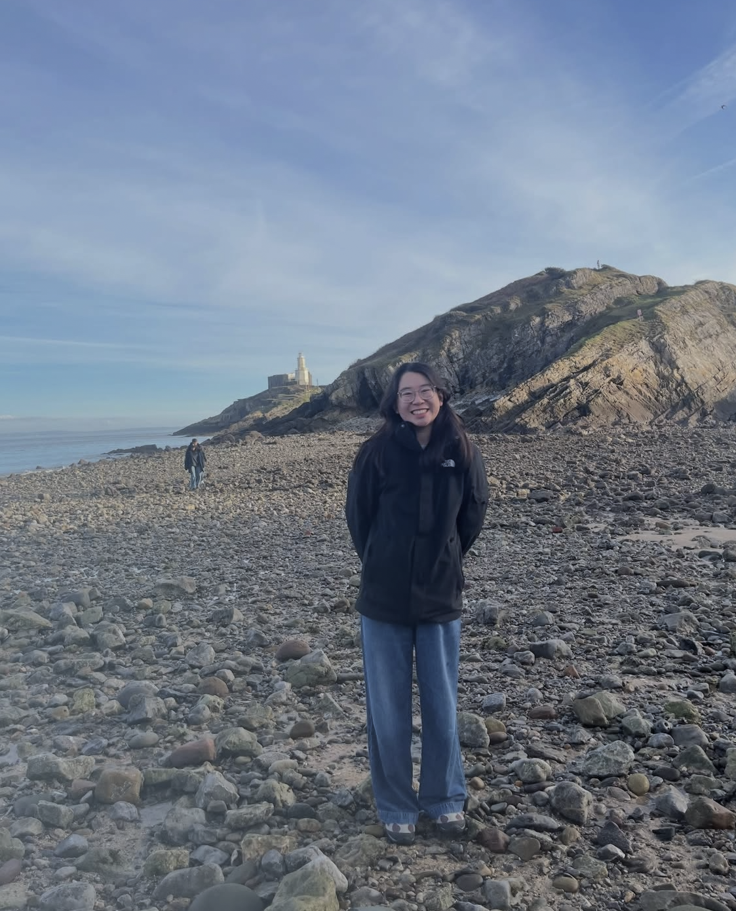

A Comic
Drawing, storyboarding, and creating a nonfiction comic about the creator of Wonder Woman.
View comic𓆝 𓆟 𓆞
I'm interested in computer science & biology, with a passion for leveraging computational tools to tackle biological challenges.
This summer, I interned at Eli Lilly in the PK/PD group! Previously, I conducted research at Novartis in the Oncology Data Science Department.
Outside of classes, I lead the logistics of HackMIT, dance on the MIT ballroom dance team, and plan a summer STEM program with dynaMIT.


B.S. Computer Science & Molecular Biology · Cambridge, MA
Relevant coursework
Systems Biology, Biostatistics, Computational Biology, Machine Learning in Molecular and Cellular Biology, Algorithms, Linear Algebra, Differential Equations
Drawing, storyboarding, and creating a nonfiction comic about the creator of Wonder Woman.
View comicLearning to center clay (and make taller vases).
View potteryJan 2026 MIT Global Teaching Lab Photos from Wales, where there are more sheep than people!
View photosDesigned and built a light-up hoop skirt with the MIT Edgerton Center, using Arduino boards and NeoPixels. Currently learning how to sew, work with glass and flames, and use a lasercutter.